Удивительные камни
Раздел «Удивительные камни» энциклопедии SUNLIGHT: 22 материалов с разбором деталей и советами по выбору.
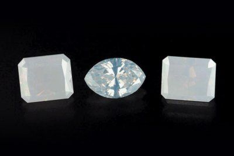
18.11.2020 Белые алмазыЧасто прозрачные алмазы с градацией цвета от D до Z по шкале GIA называют белыми. Но они не белые: их оттенок...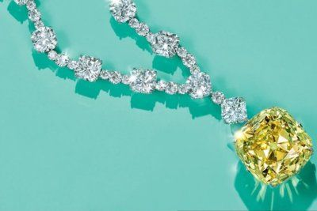
01.09.2020 Бриллиант Тиффани в киноВесь мир вновь сможет полюбоваться знаменитым желтым бриллиантом Тиффани на экранах кинотеатров. В октябре этого...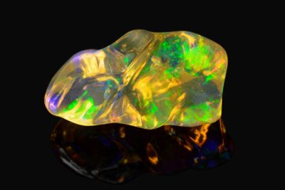
01.07.2019 Огненный опалОгненный опал — уникальный камень, который обладает присущими только ему свойствами. Чем же он отличается от других...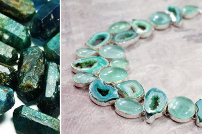
02.07.2017 АпатитКамень апатит достаточно часто встречается в природе. Его месторождения располагаются на территории многих стран, в...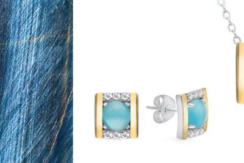
02.07.2017 Кошачий глазкошачий глаз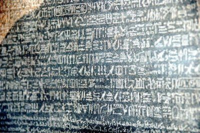
01.07.2017 Розеттский каменьРозеттский камень представляет собой плиту из базальта и является древнейшим и ценным артефактом, который был...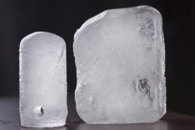
01.07.2017 Алунит — природный дезодорантМудрость и предусмотрительность природы подтверждает замечательный солевой минерал алунит горно-вулканического... 01.07.2017 Чем известен камень кохинор («Koh-i-noor»)?Кохинор — поистине загадочный камень, с которым связана целая череда смертей, это история длиной в два столетия....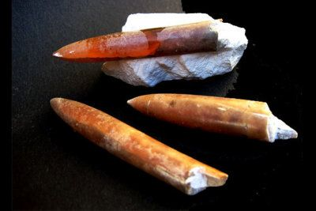
26.06.2017 Чёртов палецЧертовым пальцем называют останки раковин (ростров) белемнитов — головоногих моллюсков, населявших нашу планету в...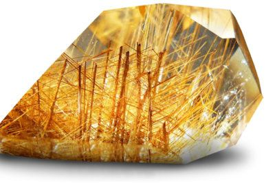
25.06.2017 Камень волосатикВ природе существует камень волосатик, который имеет довольно необычный вид. А все потому, что он напоминает кусочек...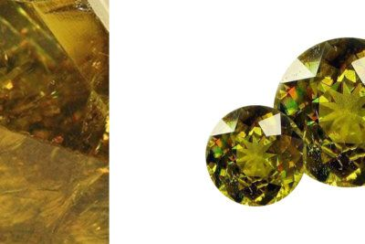
25.06.2017 ТитанитТитанит обладает загадочной красотой кристаллов треугольной формы, от которой когда-то и получил свое первое...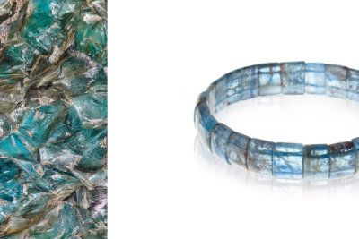
24.06.2017 КианитКианит — это название камня, который является силикатом алюминия. Он имеет природную форму пластинчатых кристаллов и...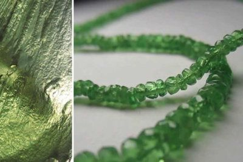
23.06.2017 ВлтавинНа нашей планете огромное количество полезных ископаемых. Среди них есть поистине редкие и удивительные минералы....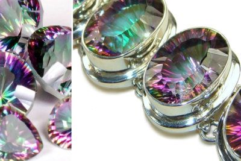
23.06.2017 Мистик топазМистик топаз — удивительный камень, который ассоциируется с волшебством или магией. Ювелирные гарнитуры, сделанные...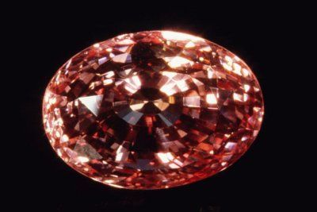
23.06.2017 Падпараджа — сапфир уникального цветаСапфир под названием «падпараджа» относится к редкой и дорогостоящей разновидности драгоценных минералов семейства...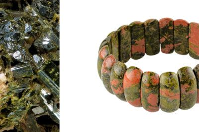
22.06.2017 ЭпидотЭпидот или пистацит — камень, который имеет фисташковый оттенок и относится к классу силикатов. Довольно часто...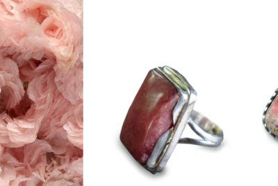
22.06.2017 РодохрозитРодохрозит — рудообразующий минерал преимущественно малиновой расцветки. Яркий и устойчивый оттенок камню придает...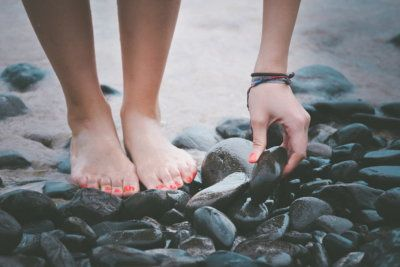
22.06.2017 Что такое движущиеся камни?На первый взгляд подобное кажется немыслимым. Ведь глыба — это самое неподвижное из того, что только есть на Земле....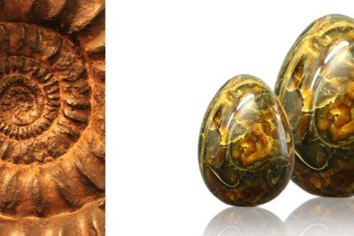
22.06.2017 АммонитТот, кто хоть однажды увидел камень аммонит, никогда уже не спутает его ни с каким другим, особенно если встретил...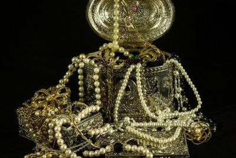
21.06.2017 История загадочного бриллианта Великий МоголАлмаз Могол несколько веков будоражит умы историков, ювелиров, искателей сокровищ и коллекционеров. История...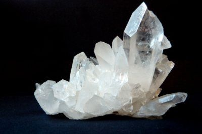
01.05.2017 История легендарного алмаза «Шах»Когда-то алмаз «Шах» в обрамлении роскошных драгоценных камней украшал трон предводителя Великих Моголов, долгое...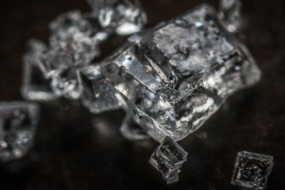
13.04.2017 Десятка самых крупных алмазов в миреСамый крупный алмаз в мире был найден 100 лет назад. В первозданном виде он не сохранился. Минерал был разделен на...